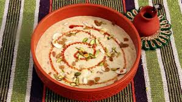

🍚 Nolen Gurer Payesh

Ingredients
- 1 cup Gobindobhog rice (or any short-grain rice)
- 4 cups full-fat milk
- 1/2 cup Nolen Gur (date palm jaggery)
- 1/2 cup sugar (optional, depending on the sweetness of the jaggery)
- 1/4 tsp cardamom powder
- 1 tbsp ghee (clarified butter)
- Cashews and raisins for garnishing
Instructions
- Wash the rice and soak it in water for about 15 minutes.
- In a large pan, bring the milk to a boil. Reduce the heat and let it simmer, stirring occasionally to prevent it from sticking to the bottom.
- In another pan, heat ghee. Add the cashews and raisins, and fry them until golden brown. Remove them and set them aside for garnishing later.
- Drain the rice and add it to the simmering milk. Cook the rice in the milk on low heat, stirring occasionally, until it becomes soft and the milk thickens (about 20-25 minutes).
- Once the rice is cooked, add the Nolen Gur (date palm jaggery) and sugar (if using). Stir well until the jaggery dissolves completely into the payesh.
- Sprinkle cardamom powder and mix well. Let the payesh simmer for another 5 minutes to allow the flavors to meld together.
- Remove from heat and let it cool slightly. Garnish with fried cashews and raisins.
Serve With
- Serve chilled or at room temperature.
💡 Tip: Nolen Gur adds a distinct, earthy sweetness to the payesh, making it a signature Bengali dessert.